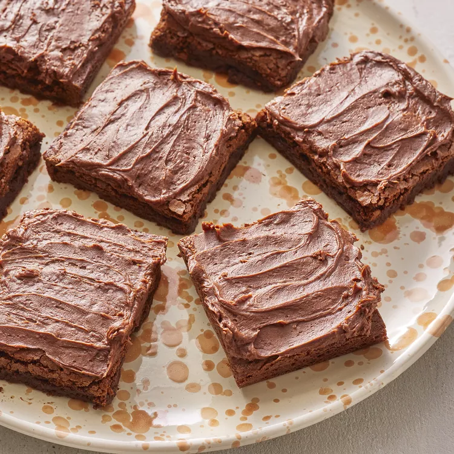

Best Brownies

The Recipe
This brownie recipe makes rich, fudgy brownies that always turn out well. They're topped with homemade chocolate frosting to make the best brownies ever!
Ingredients
- 1/2 cup butter
- 1 cup white sugar
- 2 eggs
- 1 tsp vanilla extract
- 1/3 cup all-purpose flour
- 1/4 tsp salt
- 1/4 tsp baking powder
Frosting:
- 3 tbsp butter, softened
- 3 tbsp unsweetened cocoa powder
- 1 tbsp honey
- 1 tbsp vanilla extract
- 1 cup confectioners' sugar
Steps
- Preheat the oven to 350 degrees F (175 degrees C). Grease and flour an 8-inch square pan.
- Melt 1/2 cup butter in a large saucepan. Remove from heat, and stir in sugar, eggs, and 1 teaspoon vanilla. Beat in 1/3 cup cocoa, flour, salt, and baking powder. Spread batter into prepared pan.
- Bake in the preheated oven until top is dry and edges have started to pull away from the sides of the pan, about 25 to 30 minutes. Let cool briefly before frosting.
- To make the frosting: Combine softened butter, confectioners' sugar, 3 tablespoons cocoa, honey, and 1 teaspoon vanilla extract in a bowl. Stir until smooth. Frost brownies while they are still warm.
- Preheat the oven to 350 degrees F (175 degrees C). Grease and flour an 8-inch square pan.
- Melt 1/2 cup butter in a large saucepan. Remove from heat, and stir in sugar, eggs, and 1 teaspoon vanilla. Beat in 1/3 cup cocoa, flour, salt, and baking powder. Spread batter into prepared pan.
- Bake in the preheated oven until top is dry and edges have started to pull away from the sides of the pan, about 25 to 30 minutes. Let cool briefly before frosting.
- To make the frosting: Combine softened butter, confectioners' sugar, 3 tablespoons cocoa, honey, and 1 teaspoon vanilla extract in a bowl. Stir until smooth. Frost brownies while they are still warm.